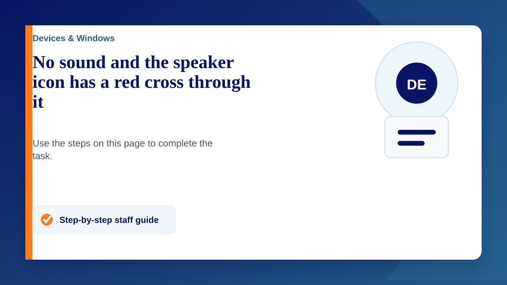

Scenario:
You'll notice that there is no sound, you'll check that your speakers are on (desktop speakers/ wall-mounted speakers / TV) and then you'll check the volume on your computer and you'll see a red cross over the speaker icon in the system tray (icons next to the time in the bottom right corner of your screen). You then might click on the icon to try and un-mute or raise the volume but it will ask for that administrator password...
You will not need the administrator password for this. Most of the time it is just that the speaker cable is loose or has come out completely
- Please check the cable is firmly in (this is normally at the back of the computer in a green socket but might be in the front, possibly with a headphone symbol)
If you have checked all connections (or are struggling with this) please submit a ticket on the service desk so we can help you on as quickly as possible.